第 6 章 对流引论#
本章解决：第 1 章把对流写成 \(q'' = h(T_s - T_\infty)\)，但 \(h\) 从哪里来、怎么算，一直悬而未决——本章补上这一块地基：对流换热的全部秘密都藏在边界层里，速度边界层、热边界层、浓度边界层三套理论是同一套框架的三种化身。把边界层守恒方程做无量纲化，努塞尔数、雷诺数、普朗特数这些无量纲数组就会自然长出来——它们不是经验符号，而是方程本身的结构。有了相似参数，动量、热量、质量三种传递可以互相类比（热-质类比、雷诺类比），求对流问题也就有了三条路径：解析解（简单几何）、数值解、实验关联式（工程主流，第 7–10 章展开）。
6.0 本章导图#
到本章为止，我们对流只作为导热问题的边界条件出现过（第 2–5 章把 \(h\) 当已知量）。从本章起正面攻坚：先把对流发生的"现场"——边界层——的物理图像立起来（6.1–6.3），再写出控制它的方程组并从中提炼无量纲数组（6.4–6.6），最后建立几个能互相搬运结果的类比关系（6.7）。质量的副本：对流质量传递（蒸发、升华）按对流换热逐条类比引入，传热与传质共用一套数学。
6.1 对流边界层#
边界层（boundary layer）概念是理解表面与流过它的流体之间对流换热与传质的中心。本节依次介绍速度、热、浓度三种边界层，并说明它们分别与摩擦系数、对流换热系数、对流传质系数的关系。
6.1.1 速度边界层#
看流体流过平板（图 6.1）。流体微粒一接触表面，速度就相对上游显著降低；对绝大多数情形，可以认为壁面处流体速度为零。这些"停住"的粒子会拖慢贴着它们的上一层流体，上一层又拖慢再上一层……直到距表面某个距离 \(y\) 处，这种拖曳效应才可忽略。流体运动的这种阻滞与切应力（shear stress）\(\tau\) 有关，切应力作用在与流动方向平行的平面内（图 6.1）。随离壁距离 \(y\) 增大，\(x\) 方向速度分量 \(u\) 逐渐增大，最终趋近来流的自由流（free stream）值 \(u_\infty\)——下标 \(\infty\) 专门标注边界层之外的自由流状态。
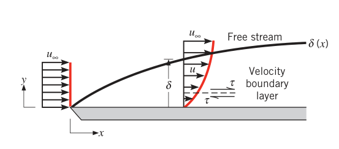
边界层厚度（boundary layer thickness）\(\delta\) 通常定义为 \(u = 0.99\,u_\infty\) 对应的 \(y\) 值。\(u\) 随 \(y\) 的变化方式叫边界层速度分布（velocity profile）。于是流动分成两个特征区：一是薄的边界层内区，速度梯度大、切应力大；二是边界层外区，速度梯度与切应力都可忽略。随着离前缘越来越远，黏性的影响越渗越深，边界层增厚（\(\delta\) 随 \(x\) 增大）。
因为这个边界层说的是流体速度，更准确地叫速度边界层（velocity boundary layer，也叫流动边界层 hydrodynamic boundary layer）。只要流体流过表面它就必然出现。它对工程师的意义在于与表面切应力 \(\tau_s\)（从而与表面摩擦）直接相关：对外部流动，由它可得局部摩擦系数（local friction coefficient）
这是一个关键无量纲参数，表面摩擦阻力由它算出。设流体为牛顿流体（Newtonian fluid），表面切应力由壁面速度梯度求出：
其中 \(\mu\) 是流体的物性——动力黏度（dynamic viscosity）。速度边界层内壁面速度梯度随离前缘的距离 \(x\) 变化，所以 \(\tau_s\) 与 \(C_f\) 都随 \(x\) 变。
拓展：壁面滑移与纳微尺度效应
"壁面处速度为零"在常规尺度下成立；原书脚注提醒，它的微观本质是分子与表面碰撞后被反射、动量发生交换（第 3.9 节的动量调节系数，第 8.8 节展开）。当通道尺寸进入纳米/微米量级时，壁面可能出现滑移，零速度假设失效。同理，热边界层理论假设流体微粒与壁面接触后达到热平衡（热调节系数为 1），这也是常规尺度的结论。本书全部对流分析默认纳微尺度效应不重要。
6.1.2 热边界层#
有流体流过表面就有速度边界层；只要自由流与表面温度不同，就必然还要长出一个热边界层（thermal boundary layer）。看等温平板上的流动（图 6.2）：前缘处温度分布均匀，\(T(y) = T_\infty\)；但一接触板面，流体微粒就达到板面温度 \(T_s\)（热平衡），它们再与相邻流体层交换能量，温度梯度便在流体中发展起来。存在温度梯度的流体区域就是热边界层，其厚度 \(\delta_t\) 通常定义为比值
对应的 \(y\) 值。离前缘越远，传热的影响渗入自由流越深，热边界层越厚。
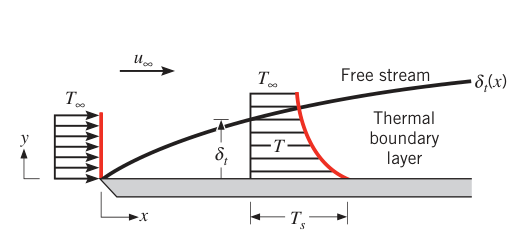
热边界层内的状态与对流换热系数的关系一步就能说清：在离前缘 \(x\) 处，对 \(y=0\) 处的流体用傅里叶定律，得局部表面热流密度
下标 \(s\) 强调这是表面处的热流密度（后面章节会省略）。为什么可以用傅里叶定律？因为壁面处流体静止不动，那里只有导热（扩散）机制在传热。回顾牛顿冷却公式（式 1.3a）：
两式联立，得局部对流换热系数
所以决定表面换热速率的，是热边界层内的状况——它强烈影响壁面温度梯度 \(\partial T/\partial y|_{y=0}\)。由于 \((T_s - T_\infty)\) 是与 \(x\) 无关的常数，而 \(\delta_t\) 随 \(x\) 增大，边界层内温度梯度必然随 \(x\) 减小；于是 \(\partial T/\partial y|_{y=0}\) 的量值随 \(x\) 减小，\(q_s''\) 与 \(h\) 都随 \(x\) 沿程下降。
拓展：为什么 h 由壁面温度梯度决定
直觉上"对流"该由流动决定，式 (6.5) 里却只有导热物性 \(k_f\) 和壁面梯度。不矛盾：壁面那层流体不动，热量只能靠分子扩散穿过它；流动的作用是"搬运走"扩散进来的能量、并决定边界层有多薄——边界层越薄，壁面梯度越陡，\(h\) 越大。所以 \(h\) 不是物性，而是整个边界层（导热 + 平流）的集体表现。求 \(h\) 的全部难度，都转化为求温度分布 \(T(x,y)\)。
6.1.3 浓度边界层#
空气流过水池表面，水会蒸发、水蒸气进入气流——这是对流质量传递（convection mass transfer）的例子。一般化：设 A、B 两组分构成的二元混合物流过表面（图 6.3）。组分 A 在表面的摩尔浓度（kmol/m³）为 \(C_{A,s}\)，自由流中为 \(C_{A,\infty}\)。若 \(C_{A,s} \neq C_{A,\infty}\)，就会发生组分 A 的对流传质。典型情形：A 是蒸气，因液面蒸发或固体表面升华而进入气流 B。此时会发展出一个与速度、热边界层类似的浓度边界层（concentration boundary layer，又称传质边界层）：存在浓度梯度的流体区域；其厚度 \(\delta_c\) 通常定义为
对应的 \(y\) 值。同样地，离前缘越远，浓度边界层越厚。
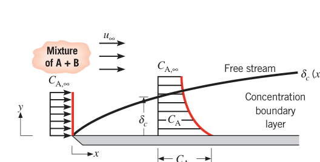
关心的量是组分 A 的摩尔通量（molar flux）\(N_A''\)（kmol/(s·m²)）。扩散引起的组分摩尔通量由一个与傅里叶定律完全类比的式子给出——菲克定律（Fick's law）：
其中 \(D_{AB}\) 是二元混合物的物性——二元扩散系数（binary diffusion coefficient）。在浓度边界层内 \(y > 0\) 处，组分传递靠整体流动（平流）与扩散共同完成；但表面处流体速度可视为零（不考虑扩散对整体运动的影响，见原书脚注；其合理性在原书 14.2、14.3 节论证），所以表面处的组分传递只靠扩散。对 \(y=0\) 用菲克定律：
仿照牛顿冷却公式，把表面摩尔通量与跨边界层浓度差联系起来：
其中 \(h_m\)（m/s）是对流传质系数（convection mass transfer coefficient），地位与对流换热系数 \(h\) 完全对等。联立式 (6.7)、(6.8)：
所以浓度边界层内的状况（决定壁面浓度梯度 \(\partial C_A/\partial y|_{y=0}\)）决定 \(h_m\)，进而决定边界层内的组分传递速率。
表面浓度 \(C_{A,s}\)（或质量密度 \(\rho_{A,s}\)）怎么定？假设气–液或气–固界面上达到热力学平衡：界面蒸气温度等于表面温度 \(T_s\)，且蒸气处于饱和态——密度（或浓度）可查热力学性质表（水蒸气查表 A.6）；也可用理想气体状态方程由蒸气压直接算：
其中 \(\mathcal{R}\) 是通用气体常数，\(p_{\mathrm{sat}}(T_s)\) 是 \(T_s\) 对应的饱和蒸气压。蒸气质量密度与摩尔浓度的关系是 \(\rho_A = \mathcal{M}_A C_A\)（\(\mathcal{M}_A\) 为组分 A 的分子量）。
拓展：δ、δt、δc 的相对大小怎么记
三种边界层一般不重合，谁厚谁薄由扩散速率之比决定：热扩散靠 \(\alpha\)，动量扩散靠 \(\nu\)，质量扩散靠 \(D_{AB}\)（6.6 节严格论证）。层流时 \(\delta/\delta_t \approx Pr^n\)、\(\delta/\delta_c \approx Sc^n\)（\(n \approx 1/3\)）。气体 \(Pr \approx 1\)，三种边界层几乎一样厚；液态金属 \(Pr \ll 1\)，热边界层远厚于速度边界层；油类 \(Pr \gg 1\)，反过来。记住"扩散系数大的那种边界层更厚"就不会错。
6.1.4 三种边界层的意义#
流过任何表面必有速度边界层，因而必有表面摩擦；只要 \(T_s \neq T_\infty\) 必有热边界层与对流换热；只要表面与自由流的组分浓度不同必有浓度边界层与对流传质。三种边界层可以同时出现，但生长速率一般不同，同一位置上 \(\delta\)、\(\delta_t\)、\(\delta_c\) 各不相同。
对工程师而言，三种边界层的主要"产出"分别是：表面摩擦、对流换热、对流传质；关键参数分别是摩擦系数 \(C_f\)、换热系数 \(h\) 与传质系数 \(h_m\)。这三个参数是对流换热与传质问题分析的核心，下面逐个展开。
6.2 局部与平均对流系数#
6.2.1 热量传递#
设速度 \(V\)、温度 \(T_\infty\) 的流体流过任意形状、面积 \(A_s\) 的表面（图 6.4a），表面温度均匀为 \(T_s\)。由 6.1.2 节，表面热流密度与 \(h\) 都沿表面变化。总换热量只能对局部热流密度积分：
代入式 (6.4)：
定义整个表面的平均对流换热系数（average convection coefficient）\(\bar{h}\)，总换热量又可写成
两式相等，得平均与局部系数的关系：
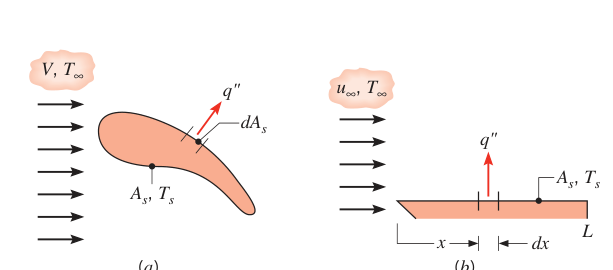
平板特例（图 6.4b）：\(h\) 只随离前缘的距离 \(x\) 变，式 (6.13) 退化为一维积分：
6.2.2 质量传递#
完全平行的一套结果对对流传质成立。浓度 \(C_{A,\infty}\) 的流体流过组分浓度均匀保持为 \(C_{A,s}\) 的表面（\(C_{A,s} \neq C_{A,\infty}\)，图 6.5a），发生对流传质；整个表面的总摩尔传递速率 \(N_A\)（kmol/s）为
其中平均与局部对流传质系数的关系为
平板（图 6.5b）则简化为
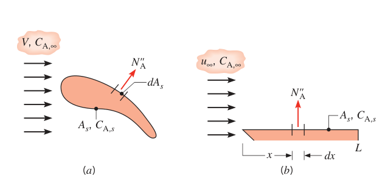
把式 (6.8)、(6.15) 两边乘以组分 A 的分子量 \(\mathcal{M}_A\)（kg/kmol），传递量也可用质量通量（mass flux）\(n_A''\)（kg/(s·m²)）与质量传递速率 \(n_A\)（kg/s）表示：
其中 \(\rho_A\)（kg/m³）是组分 A 的质量密度。菲克定律同样有质量形式（式 6.7 乘 \(\mathcal{M}_A\)）：
于是 \(h_m\) 也可写成质量密度形式：
拓展：传质符号约定不统一
原书脚注（引 Webb 的综述）提醒：传质文献里驱动势、通量与传质系数的写法五花八门，没有统一标准——有人用浓度差、有人用密度差、有人用分压差，系数单位随之不同。读其他书或论文时，先核对它的 \(h_m\)（或 \(k_c\)、\(k_m\)）配哪种驱动势，再套公式，别把本书的式 (6.8) 直接安在别的定义上。
6.2.3 对流问题#
任何对流问题最关心的都是局部通量与/或总传递速率，而它们由速率方程（式 6.4、6.8、6.12、6.15）给出——速率方程里待定的正是局部系数（\(h\) 或 \(h_m\)）与平均系数（\(\bar h\) 或 \(\bar h_m\)）。因此，确定这些系数就是对流问题本身（the problem of convection）。这件事不简单：系数除了依赖密度、黏度、导热系数、比热等一堆流体物性，还依赖表面几何与流动条件——这种多变量纠缠，根源就在对流传递依赖于表面上发展的边界层。
【例 6.1】粗糙平板上局部换热系数的积分
已知（Known）：极粗糙表面上流动的局部换热系数 \(h_x\) 的实验结果拟合为
其中 \(a\) 是系数（W/m^{1.9}·K），\(x\)（m）是离平板前缘的距离。
求（Find）：1. 长为 \(x\) 的板上平均换热系数 \(\bar h_x\) 与 \(x\) 处局部值 \(h_x\) 之比；2. 画出 \(h_x\) 与 \(\bar h_x\) 随 \(x\) 的变化。
示意图（Schematic）：
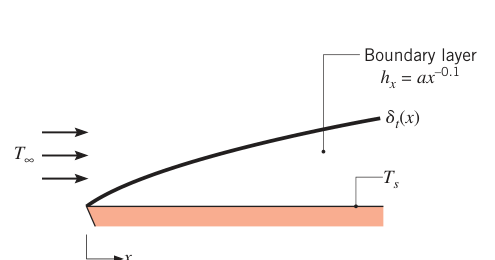
假设（Assumptions）：稳态、二维不可压边界层流动（边界层近似成立）。
分析（Analysis）：
- 由式 (6.14)，从 0 到 \(x\) 的平均对流换热系数为
代入 \(h_x = a x^{-0.1}\) 并积分：
即
- \(h_x\) 与 \(\bar h_x\) 随 \(x\) 的变化如下：
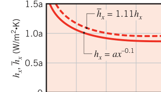
点评（Comments）：边界层发展使局部与平均系数都随离前缘距离增大而减小；因此 0 到 \(x\) 的平均系数必然大于 \(x\) 处的局部值。
【例 6.2】萘圆柱的升华速率
已知（Known）：一根直径 20 mm 的长圆柱由固体萘（naphthalene，常见防蛀剂）制成，暴露在空气流中，平均对流传质系数 \(\bar h_m = 0.05\) m/s。萘蒸气在圆柱表面的摩尔浓度为 \(5 \times 10^{-6}\) kmol/m³，分子量 128 kg/kmol。
求（Find）：单位长度圆柱的升华（质量传递）速率 \(n_A'\)（kg/(s·m)）。
示意图（Schematic）：
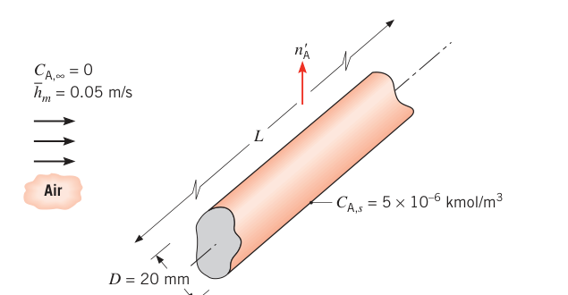
假设（Assumptions）：1. 稳态条件；2. 自由流中萘浓度可忽略（\(C_{A,\infty} = 0\)）。
分析（Analysis）：萘靠对流传递给空气。由式 (6.15)，圆柱的总摩尔传递速率
代入 \(C_{A,\infty} = 0\)，且单位长度传递速率 \(N_A' = N_A/L\)：
质量升华速率再乘分子量：
点评（Comments）：整个过程只用了速率方程 (6.15)——前提是 \(\bar h_m\) 已知（本题直接给定；一般情形它正是"对流问题"要算的东西）。表面浓度 \(C_{A,s} = 5 \times 10^{-6}\) kmol/m³ 对应壁温下萘的饱和蒸气态，由热力学平衡确定。
【例 6.3】由蒸气分压分布求对流传质系数
已知（Known）：在水面的某个位置，测得水蒸气分压 \(p_A\)（atm）随离水面距离 \(y\) 的分布：\(p_{A,s} = 0.10\) atm（\(y = 0\) 处），自由流 \(p_{A,\infty} = 0.02\) atm，且 \(y = 0\) 处分布曲线的切线斜率为 \(-33.3\) atm/m（在 \(y = 0\) 到 3.0 mm 间由 \((0 - 0.1)/(0.003 - 0)\) 得出）。
求（Find）：该位置的对流传质系数 \(h_{m,x}\)。
示意图（Schematic）：
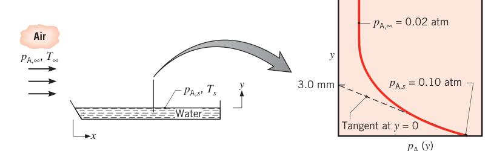
假设（Assumptions）：1. 水蒸气可按理想气体处理；2. 条件等温。
物性（Properties）：表 A.6，饱和蒸气（0.1 atm ≈ 0.101 bar）：\(T_s = 319\) K。表 A.8，水蒸气–空气（319 K）：\(D_{AB}(319\ \mathrm{K}) = D_{AB}(298\ \mathrm{K}) \times (319/298)^{3/2} = 0.26 \times 10^{-4} \times 1.108 = 0.288 \times 10^{-4}\ \mathrm{m^2/s}\)。
分析（Analysis）：由式 (6.21)，局部对流传质系数为
蒸气按理想气体近似且 \(T\) 恒定（等温），\(\rho_A = \mathcal{M}_A C_A = \mathcal{M}_A\, p_A / (\mathcal{R} T)\)，密度比等于分压比，式 (6.21) 化为分压形式：
由实测分压分布：
于是
点评（Comments）：液–气界面热力学平衡给出界面温度 \(T_s = 319\) K（由表 A.6 按饱和压力 0.1 atm 查得）；扩散系数按 \((T)^{3/2}\) 缩放从 298 K 修正到 319 K。
6.3 层流与湍流#
到目前为止我们还没谈流动条件本身。处理任何对流问题的第一步必备动作：判断边界层是层流还是湍流——表面摩擦与对流传递速率强烈依赖到底哪种流态存在。
6.3.1 层流与湍流速度边界层#
平板上边界层的发展如图 6.6。很多情形下层流段与湍流段先后出现：层流段在前。无论哪种流态，流体都有 \(x\)、\(y\) 两个方向的速度分量——边界层沿 \(x\) 增厚时，近壁流体被减速，必然有流体沿 \(y\) 方向离开表面。
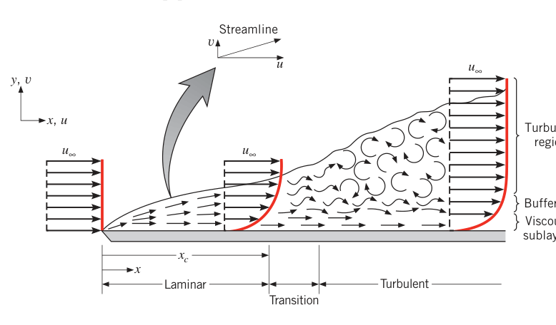
层流边界层（laminar boundary layer）中流动高度有序：能辨认出流线，流体微粒沿流线运动。由 6.1.1 节，边界层厚度沿程增长、\(y=0\) 处速度梯度沿程减小；由式 (6.2)，局部表面切应力 \(\tau_s\) 也随 \(x\) 减小。这种高度有序的行为一直维持到转捩区（transition zone）——层流向湍流的转变在这里发生，转捩区内的流动状态随时间变化，时而表现层流特征、时而表现湍流特征。
充分发展湍流边界层（turbulent boundary layer）的流动高度无序：较大尺度的流体团块做随机三维运动。边界层内的混掺把高速流体带向壁面、把慢速流体送入自由流。大量混掺由称为条带（streaks）的流向涡促发——它们在平板附近间歇产生、快速生长又快速衰亡。近年分析与实验研究（原书引 Hof 等 2004）表明，湍流中这些及其他拟序结构（coherent structures）可以以超过 \(u_\infty\) 的速度成波传播、非线性相互作用，滋生湍流的混沌状态。
拓展：湍流里的条带结构
streaks（条带）是近壁湍流边界层里最著名的拟序结构：低速流体沿流向拉成长条，被成对反向旋转的流向涡托举、摆动、破碎，是"湍流怎么自己维持"的关键一环。它提醒你：湍流不是纯粹的随机噪声，而是有组织结构与随机脉动的叠加——这也是为什么湍流对流换热远强于层流。
湍流边界层内任一点都有速度与压强的脉动。按离壁面的距离，湍流边界层分三个区（图 6.6）：黏性底层（viscous sublayer）——传递由扩散主导，速度分布近似线性；相邻的缓冲层（buffer layer）——扩散与湍流混掺相当；湍流区（turbulent zone）——传递由湍流混掺主导。比较层流与湍流的速度分布（图 6.7）：湍流分布因缓冲层与湍流区的混掺而相对平坦，速度梯度被集中压进黏性底层——于是壁面梯度 \(\partial u/\partial y|_{y=0}\) 大增。所以图 6.6 中湍流段的 \(\tau_s\) 一般大于层流段。
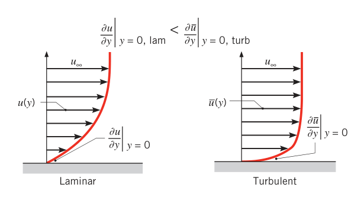
层流向湍流的转捩最终由触发机制决定：流体内部自然发展的非定常流动结构之间的相互作用，或许多典型边界层中存在的小扰动。扰动可能来自自由流的脉动，也可能由表面粗糙度或微小振动诱发。转捩是否发生，取决于触发机制沿流向是放大还是衰减——而这由一个无量纲参数组——雷诺数（Reynolds number）——决定：
对平板，特征长度取 \(x\)（离前缘的距离）。后面会证明（6.6 节），雷诺数表示惯性力与黏性力之比。\(Re_x\) 小：惯性力相对黏性力可忽略，扰动被耗散，流动保持层流；\(Re_x\) 大：惯性力足以放大触发机制，转捩为湍流。
判断层流/湍流时，通常假设转捩发生在某个位置 \(x_c\)（图 6.6），由临界雷诺数（critical Reynolds number）\(Re_{x,c}\) 确定。平板流动的 \(Re_{x,c}\) 依表面粗糙度与自由流湍流度不同，约在 \(10^5\) 到 \(3 \times 10^6\) 之间。计算中常取代表值
除非特别说明，本书平板算例都用它。
6.3.2 层流与湍流的热边界层与浓度边界层#
速度分布决定边界层内热能/化学组分的平流输运，所以流态对对流换热与传质速率同样有深刻影响。与层流速度边界层类似，层流的热边界层与浓度边界层沿流向增厚，\(y=0\) 处的温度、浓度梯度沿流向减小，由式 (6.5)、(6.9)，换热与传质系数都随 \(x\) 减小。
正如湍流混掺在 \(y=0\) 附近造成大速度梯度（图 6.7），它同样在壁面附近造成大的温度、浓度梯度，使换热与传质系数跨越转捩区陡增。这些效应画在图 6.8 里：速度边界层厚度 \(\delta\) 与局部换热系数 \(h\) 在转捩处的行为——\(\delta\) 突然增厚，\(h\) 突然跃升后沿程缓降。因为湍流混掺降低了导热/扩散在决定热、浓度边界层厚度中的地位，湍流时三种边界层厚度的差别比层流时小得多。另外由式 (6.24)，换热/传质的存在（温度或浓度改变流体密度与黏度）会影响转捩位置 \(x_c\)。
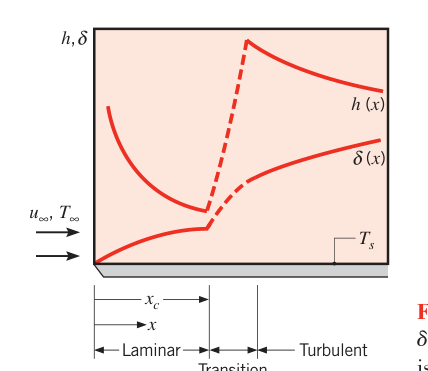
【例 6.4】水流平板的层流+湍流平均换热系数
已知（Known）：水以 \(u_\infty = 1\) m/s 流过长 \(L = 0.6\) m 的平板。两种工况：水温约 300 K 与约 350 K。层流区与湍流区的实验测量表明局部换热系数很好地满足
其中 \(x\) 单位为 m。300 K 时 \(C_{lam} = 395\ \mathrm{W/m^{1.5}\cdot K}\)、\(C_{turb} = 2330\ \mathrm{W/m^{1.8}\cdot K}\)；350 K 时 \(C_{lam} = 477\ \mathrm{W/m^{1.5}\cdot K}\)、\(C_{turb} = 3600\ \mathrm{W/m^{1.8}\cdot K}\)。
求（Find）：两种水温下整块板的平均对流换热系数 \(\bar h\)。
示意图（Schematic）：
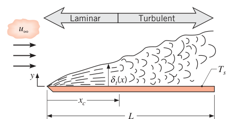
假设（Assumptions）：1. 稳态条件；2. 转捩发生在临界雷诺数 \(Re_{x,c} = 5 \times 10^5\)。
物性（Properties）：表 A.6，水：300 K 时 \(\rho = v_f^{-1} = 997\ \mathrm{kg/m^3}\)、\(\mu = 855 \times 10^{-6}\ \mathrm{N \cdot s/m^2}\)；350 K 时 \(\rho = 974\ \mathrm{kg/m^3}\)、\(\mu = 365 \times 10^{-6}\ \mathrm{N \cdot s/m^2}\)。
分析（Analysis）：局部换热系数强依赖层流/湍流状态，所以先求转捩位置 \(x_c\)。由式 (6.24)：300 K 时
350 K 时
由式 (6.14)，平均系数要分段积分：
即
300 K：
350 K：
（代入四舍五入后的 \(x_c = 0.19\) m 会得约 3690；原书按未舍入的 \(x_c \approx 0.187\) m 计算，得 3710。）
局部与平均系数沿板的分布：
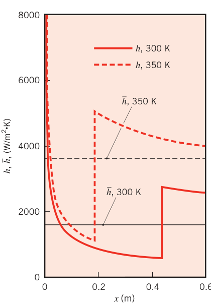
点评（Comments）：
- 350 K 的平均系数是 300 K 的两倍多。这么强的温度依赖主要来自 \(x_c\) 的移动——高温下水黏度变小，转捩提前。对流分析中仔细考虑流体物性的温度依赖至关重要。
- 局部系数的空间变化显著：最大局部系数出现在平板前缘（层流热边界层极薄处）与 \(x_c\) 下游紧邻处（湍流边界层最薄处）。
6.4 边界层方程#
考察控制边界层行为的方程，能更深入理解物理机制，并进一步说明边界层与对流传递的关系（图 6.9）。速度边界层来自自由流速度与壁面零速度之差，热边界层来自自由流与表面温度之差；流体取为 A+B 二元混合物，浓度边界层来自自由流与表面浓度之差（\(C_{A,\infty} \neq C_{A,s}\)）。图 6.9 中三种厚度 \(\delta_t\)、\(\delta_c\)、\(\delta\) 的相对大小是随意画的——影响相对厚度发展的因素后面才讨论。
本节目标：给出控制边界层内速度、温度、组分浓度场的微分方程。6.4.1 节给层流方程（完整推导见附录 E 的方程组与在线补充节 6S.1）；湍流方程在附录 F（湍流本质上非定常）。
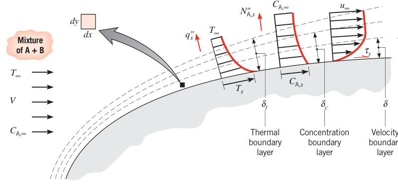
6.4.1 层流边界层方程#
流体中速度、温度、浓度梯度共存时，每一点都必须满足几条自然规律：质量守恒、能量守恒、化学组分守恒，以及牛顿第二定律。把诸定律施加于流场中的一个微分控制体（\(dx \times dy \times 1\)，图 6.9），即得这些方程。直角坐标下、常物性不可压流体的稳态二维方程组见附录 E（由 6S.1 节推导），它们是层流边界层分析的起点。
先做简化：体力可忽略（\(X = Y = 0\)），流体内部无热能生成（\(\dot q = 0\)），流动无化学反应（\(\dot N_A = 0\)）。再叠加边界层近似——这是整个边界层理论的灵魂：
- 边界层厚度相对物体尺寸极小，而 \(x\) 方向速度、温度、浓度要在这么薄的距离内从表面值过渡到自由流值，所以法向（\(y\)）梯度远大于流向（\(x\)）梯度，从而 \(x\) 方向的动量、热能、组分扩散相对 \(y\) 方向可忽略：
（等价说法：\(x\) 方向的净切应力、导热热流、组分扩散通量都可忽略。）
- 边界层极薄，层内 \(x\) 方向压强梯度可用自由流的压强梯度代替：
\(dp_\infty/dx\) 的形式由表面几何决定，可从自由流流动（那里切应力可忽略）单独求出——所以压强梯度是已知量。
于是四大守恒方程化为边界层形式。
连续方程（质量守恒，\(dx \cdot dy \cdot 1\) 控制体）：
两项分别是 \(x\)、\(y\) 方向的净流出（流出减流入），稳态流动总和必须为零。速度有 \(u\)、\(v\) 两个分量：\(v\) 正是边界层增厚把流体"挤离"壁面的产物。
\(x\)-动量方程（对控制体在 \(x\) 方向应用牛顿第二定律）：
左边是 \(x\)-动量因流体跨越控制体边界而净流出的速率；右边第一项是净压强力，第二项是净黏性切应力。
能量方程（对流动流体中的控制体应用能量守恒）：
左边是热能因整体流动（平流，advection）净流出控制体的速率；右边第一项是 \(y\) 方向导热造成的净流入；最后一项是黏性耗散（式 E.5）在边界层中剩下的形式——因为边界层内 \(u \gg v\)、法向梯度远大于流向梯度，耗散只剩 \((\partial u/\partial y)^2\) 一项。多数情形这项相对平流与导热可忽略；但高速（尤其超声速）飞行中的气动加热是它必须保留的著名场景。
组分守恒方程（对控制体应用化学组分守恒）：
左边是平流造成的组分 A 净输运，右边是 \(y\) 方向扩散造成的净流入。
给定边界条件后，方程 (6.27)–(6.30) 可解出各边界层内 \(u, v, T, C_A\) 的空间变化。对常物性不可压流，(6.27)、(6.28) 与 (6.29)、(6.30) 解耦：速度场 \(u(x,y), v(x,y)\) 可以先解，不必管温度与浓度；由 \(u(x,y)\) 求出 \(\partial u/\partial y|_{y=0}\)，就用式 (6.2) 得到壁面切应力。反过来，温度与浓度通过 \(u, v\) 与速度场耦合：必须先知道速度场才能解 \(T(x,y)\) 与 \(C_A(x,y)\)；解出后，对流系数由式 (6.5)、(6.9) 确定。所以 \(h\) 与 \(h_m\) 强烈依赖速度场。
拓展：边界层近似丢了什么
对比完整的纳维–斯托克斯方程（附录 E 的 E.2），式 (6.28) 丢掉了 \(\mu\,\partial^2 u/\partial x^2\) 一项，且压强项换成了已知函数。代价：边界层方程只在薄层内合法、不能描述分离与大回流区。收益：二阶双调和问题变成抛物型"推进"问题，自前缘向下游一步步积就行——这就是 Blasius 平板解（第 7.2 节、附录 G）能写出封闭级数解的原因。质量传递时假设表面 \(v = 0\)（扩散对速度边界层无影响）适用于一般蒸发/升华问题，但不适用于强表面质量喷射的"质量传递冷却"；边界层流体是 A+B 混合物，物性本应取混合物值，但本书所有问题中 \(C_A \ll C_B\)，物性可取组分 B 的值（原书脚注 7）。
边界层方程的解一般超出本书数学范围，本书只处理平板平行流的层流精确解（第 7.2 节与附录 G：Blasius 速度解与波尔豪森温度解）；其余解析解见高等对流教科书（原书引 Kays 等、Burmeister、Kaviany），更一般的边界层解可用数值方法（有限差分/有限元，原书引 Patankar）。还要认识到：大量工程问题涉及湍流对流换热，数学与物理上都更复杂（湍流方程见附录 F）。
必须强调：推导层流边界层方程，主要目的不是求解。真正的动机有两个：一是建立对边界层内物理过程的直觉——它们决定壁面摩擦与能量、组分传递；二是方程可用来识别关键的边界层相似参数与动量、热量、质量传递之间的重要类比——它们有大量实用价值（6.5–6.7 节的舞台）。这些相似参数与类比同样适用于湍流。
6.4.2 可压缩流动#
前面与附录 E 的方程都限于不可压流动（密度当常数）。流动中因压强变化导致密度显著变化的称为可压缩流动（compressible flow），其对流换热的处理超出本书范围。液体几乎总可按不可压处理；气体的密度变化在流速接近或超过声速时必须考虑。具体判据：气体从不可压到可压的渐变发生在临界马赫数 \(Ma_c \approx 0.3\) 处，其中 \(Ma = V/a\)，\(a\) 是声速。理想气体的声速 \(a = \sqrt{\gamma R T}\)，\(\gamma = c_p/c_v\) 为比热比，\(R\) 为气体常数，\(T\) 用开尔文。
原书笔误：空气摩尔质量
原书 6.4.2 节算例把空气的摩尔质量写成 \(\mathcal{M} = 28.7\) kg/kmol（\(R = 8315/28.7 \approx 287\)）。空气摩尔质量应为 28.97 kg/kmol（\(8315/28.97 = 287\ \mathrm{J/(kg \cdot K)}\)，与书中结果一致）。按 28.7 算会得 289.7，对不上 287——是排版笔误。
照原书算例走一遍：空气 \(T = 300\ \mathrm{K}\)、\(p = 1\) atm 按理想气体，\(R = 8315/28.97 \approx 287\ \mathrm{J/(kg \cdot K)}\)，\(c_v = c_p - R = 1007 - 287 = 720\ \mathrm{J/(kg \cdot K)}\)，\(\gamma = c_p/c_v = 1.4\)，声速 \(a = \sqrt{1.4 \times 287 \times 300} = 347\) m/s。所以 300 K 的空气流速 \(V \gtrsim 0.3 \times 347 \approx 100\) m/s 时必须按可压缩处理。第 6–9 章的材料都限于不可压或低速流动，解题前先确认压缩性效应不重要（湍流与压缩性常常结伴出现；可以证明，对足够小的几何，任何湍流流动同时也是可压缩流动——原书脚注，习题 6.26）。
6.5 边界层相似：无量纲化的边界层方程#
看式 (6.28)、(6.29)、(6.30)：形式惊人地相似。若式 (6.28) 的压强梯度项与式 (6.29) 的黏性耗散项可忽略，三个方程形式完全相同——左边平流项、右边扩散项。这正是低速强制对流的典型情形，工程上大量存在。把方程无量纲化，相似性的含义就能严格展开。
6.5.1 边界层相似参数#
先定义无量纲自变量：
\(L\) 是所关心表面的特征长度（如平板长度）。再定义无量纲因变量：
\(V\) 是表面上游来流速度（图 6.9），以及
把 \(x = x^* L\)、\(y = y^* L\)、\(u = u^* V\) 等代入式 (6.28)、(6.29)、(6.30)（黏性耗散已忽略；\(p^* \equiv p_\infty/(\rho V^2)\) 为无量纲压强），得表 6.1 的无量纲守恒方程与 \(y\) 方向边界条件。
表 6.1 无量纲形式的边界层方程与 \(y\) 方向边界条件
| 边界层 | 守恒方程 | 壁面条件 | 自由流条件 | 相似参数 |
|---|---|---|---|---|
| 速度 | \(u^* \dfrac{\partial u^*}{\partial x^*} + v^* \dfrac{\partial u^*}{\partial y^*} = -\dfrac{dp^*}{dx^*} + \dfrac{1}{Re_L}\dfrac{\partial^2 u^*}{\partial y^{*2}}\)（式 6.35） | \(u^*(x^*, 0) = 0\) | \(u^*(x^*, \infty) = u_\infty(x^*)/V\) | \(Re_L = \dfrac{VL}{\nu}\)（式 6.41） |
| 热 | \(u^* \dfrac{\partial T^*}{\partial x^*} + v^* \dfrac{\partial T^*}{\partial y^*} = \dfrac{1}{Re_L\, Pr}\dfrac{\partial^2 T^*}{\partial y^{*2}}\)（式 6.36） | \(T^*(x^*, 0) = 0\) | \(T^*(x^*, \infty) = 1\) | \(Re_L\)、\(Pr = \dfrac{\nu}{\alpha} = \dfrac{\mu c_p}{k}\)（式 6.42） |
| 浓度 | \(u^* \dfrac{\partial C_A^*}{\partial x^*} + v^* \dfrac{\partial C_A^*}{\partial y^*} = \dfrac{1}{Re_L\, Sc}\dfrac{\partial^2 C_A^*}{\partial y^{*2}}\)（式 6.37） | \(C_A^*(x^*, 0) = 0\) | \(C_A^*(x^*, \infty) = 1\) | \(Re_L\)、\(Sc = \dfrac{\nu}{D_{AB}}\)（式 6.43） |
无量纲化催生了三个极重要的相似参数（similarity parameters）：雷诺数 \(Re_L\)、普朗特数（Prandtl number）\(Pr\)、施密特数（Schmidt number）\(Sc\)。相似参数的威力：只要两个几何相似表面上的相似参数与无量纲边界条件相同，无量纲方程的解（无量纲速度、温度、浓度分布）就完全相同——一组结果可以推广到不同流体、不同流速 \(V\)、不同尺寸 \(L\) 的所有相似工况。
6.5.2 解的函数形式#
表 6.1 的方程（式 6.35–6.43）极其有用：它直接告诉你重要结果能简化、推广到什么程度。
速度边界层。动量方程 (6.35) 表明：速度边界层虽依赖 \(\rho\)、\(\mu\)、\(V\)、\(L\)，但这种依赖可以打包成雷诺数。其解必为函数形式
\(dp^*/dx^*\) 由表面几何经自由流单独确定，它代表几何对速度分布的影响。由式 (6.2)、(6.31)、(6.32)，表面切应力
再由式 (6.1) 与 (6.41)，摩擦系数（friction coefficient）为
由式 (6.44)，壁面梯度 \(\partial u^*/\partial y^*|_{y^*=0} = f(x^*, Re_L, dp^*/dx^*)\)。所以给定几何后：
这个结果的意义不容小看：摩擦系数这个工程师极其关心的无量纲量，可以只用无量纲坐标 \(x^*\) 与雷诺数表达；而且对给定几何，联系 \(C_f\) 与 \(x^*\)、\(Re_L\) 的函数是普适的——不同流体、宽范围的 \(V\) 与 \(L\) 都适用。
热边界层。直觉上 \(h\) 应依赖 \(k, c_p, \mu, \rho, V, L\) 与几何。但式 (6.36) 指明简化方向：其解必为
由对流系数定义式 (6.5) 与无量纲变量 (6.31)、(6.33)：
于是自然定义出努塞尔数（Nusselt number）：
它等于壁面处的无量纲温度梯度，度量表面处对流换热的强度。由式 (6.47)，给定几何：
努塞尔数之于热边界层，正如摩擦系数之于速度边界层。 式 (6.49) 表明：给定几何，\(Nu\) 必是 \(x^*, Re_L, Pr\) 的普适函数。函数一旦已知（实验、理论或数值都行），就能对任何流体、任何 \(V\) 与 \(L\) 算 \(Nu\)，进而由 \(Nu\) 得 \(h\)，由式 (6.4) 得局部热流。平均系数对整个表面积分、与 \(x^*\) 无关，所以平均努塞尔数的函数形式是
浓度边界层。完全平行：式 (6.37) 的解必为 \(C_A^* = f(x^*, y^*, Re_L, Sc, dp^*/dx^*)\)；由式 (6.9) 与 (6.31)、(6.34) 定义舍伍德数（Sherwood number）：
它等于壁面处的无量纲浓度梯度，度量表面处对流传质的强度。给定几何：
舍伍德数之于浓度边界层，正如努塞尔数之于热边界层。
拓展：白金汉π定理——量纲分析的另一条路
得到式 (6.50) 还有一条路：白金汉π定理（Buckingham pi theorem）。它说：若一个物理关系含 \(n\) 个物理量、这些量共涉 \(k\) 个基本量纲，则关系可改写为 \(n - k\) 个无量纲 \(\pi\) 项之间的关系。比如先凭直觉判断 \(\bar h = f(k, c_p, \rho, \mu, V, L)\)（7 个量、4 个基本量纲 M/L/t/T），π 定理立刻给出 \(\overline{Nu} = f(Re_L, Pr)\)——与式 (6.50) 相同。原书特别指出这条路的软肋：π 定理的成败取决于你能否凭直觉挑对相关物理量——漏一个量或多个无关量就全盘皆错；而从守恒方程出发无量纲化，相似参数是被严格推出来的，没有猜的成分。两条路互为印证：π 定理快，微分方程法稳。
式 (6.50) 这类结果的分量要掂清楚：无论 \(\bar h\) 来自理论、实验还是数值计算，它都可以完全由三个无量纲数组表示——替代了原来的七个有量纲参数。这种简化的便利与威力在第 7–10 章会充分显现。而且，一旦某几何的函数形式（比如由实验室测量）确定，它就普适适用于不同流体、不同速度、不同尺寸——只要出发方程的隐含假设仍然成立（黏性耗散、体力可忽略等）。
【例 6.5】涡轮叶片的温度与尺寸相似
已知（Known）：用空气做工质的涡轮叶片试验，叶片表面某点 \((x^*)\) 测得热流密度 \(q'' = 95\,000\ \mathrm{W/m^2}\)。为维持稳态表面温度 800°C，传入叶片的热由叶片内冷却通道的循环冷却剂带走。叶片弦长 \(L = 40\) mm，来流 \(T_\infty = 1150^\circ\mathrm{C}\)、\(V = 160\) m/s。
求（Find）：1. 增大冷却剂流量、把表面温度降到 \(T_{s,1} = 700^\circ\mathrm{C}\) 时，\(x^*\) 处的热流密度；2. 同一无量纲位置 \(x^*\) 处，几何相似的大叶片（弦长 \(L_2 = 80\) mm）在 \(T_\infty = 1150^\circ\mathrm{C}\)、\(V_2 = 80\) m/s、\(T_s = 800^\circ\mathrm{C}\) 工况下的热流密度。
示意图（Schematic）：
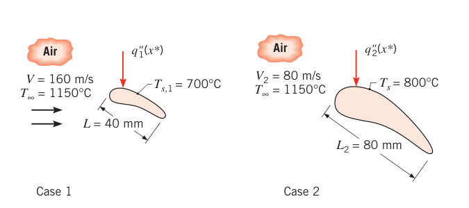
假设（Assumptions）：1. 稳态、不可压流动；2. 空气物性为常数。
分析（Analysis）：
- 表面温度 800°C 时，\(x^*\) 处局部对流换热系数由牛顿冷却公式给出：\(q'' = h(T_\infty - T_s)\)，即 \(h = q''/(T_\infty - T_s)\)。先不急着算数值。由式 (6.49)，给定几何下 \(Nu = f(x^*, Re_L, Pr)\)。表面温度改为 700°C 后，\(x^*\)、\(Re_L\)、\(Pr\) 都不变（物性取常数），所以局部努塞尔数不变；又因 \(L\)、\(k\) 不变，局部换热系数不变。于是 700°C 时
- 大叶片工况（Case 2）：\(L\) 增大一倍、\(V\) 减小一半，雷诺数不变：
所以（\(x^*\)、\(Pr\) 也不变）局部努塞尔数不变。但特征长度变了，局部换热系数随之变：
点评（Comments）：
- 若 Case 2 的雷诺数不同（\(Re_{L,2} \neq Re_L\)），没有式 (6.49) 的具体函数形式就求不出 \(q_2''\)——各种形状的这种函数形式在后续章节给出。
- 边界层内空气温度介于 \(T_s\) 与 \(T_\infty\) 之间，代表性物性应按算术平均（膜）温度取：\(T_{f,1} = (700 + 1150)/2 = 925^\circ\mathrm{C}\)、\(T_{f,2} = (800 + 1150)/2 = 975^\circ\mathrm{C}\)（详见 7.1 节）。按各自膜温度取物性，两工况的 \(Re\) 与 \(Nu\) 会有微小差别，但对 Case 2 局部热流的影响不大。
- \(T = 1150^\circ\mathrm{C} = 1423\) K 时，\(c_v = c_p - R = 1167 - 287 = 880\ \mathrm{J/(kg \cdot K)}\)，\(\gamma = c_p/c_v = 1.33\)，声速 \(a = \sqrt{1.33 \times 287 \times 1423} = 736\) m/s。两个工况的马赫数 \(Ma = V/a\) 分别为 0.22 与 0.11，均不可压。若有压缩性，\(Nu\) 还要依赖马赫数，两工况就不再相似。
【例 6.6】用常压空气风洞替代加压氢气试验
已知（Known）：特征长度 \(L_{H_2} = 40\) mm 的二维流线型支柱，浸没在氢气流中：\(p_{H_2} = 2\) atm、\(V_{H_2} = 8.1\) m/s、\(T_{\infty,H_2} = -30^\circ\mathrm{C}\)，表面温度 \(T_{s,H_2} = -15^\circ\mathrm{C}\)，求平均换热系数 \(h_{H_2}\)。做加压氢气实验太贵，工程师打算利用相似性，改用常压空气风洞：几何相似支柱 \(L_{Air} = 60\) mm、周长 \(P = 150\) mm，风洞内 \(T_{\infty,Air} = 23^\circ\mathrm{C}\)，测得表面温度 \(T_{s,Air} = 30^\circ\mathrm{C}\) 时单位长度热损失（垂直纸面方向）\(q'_{Air} = 50\) W/m。
求（Find）：风洞所需空气流速 \(V_{Air}\)；氢气中的平均对流换热系数 \(h_{H_2}\)。
示意图（Schematic）：
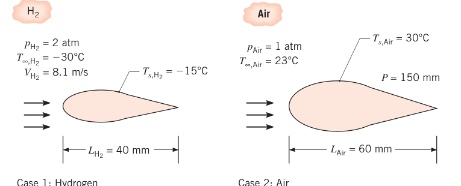
假设（Assumptions）：1. 稳态、不可压边界层行为；2. 理想气体；3. 常物性；4. 黏性耗散可忽略。
物性（Properties）：表 A.4，空气（1 atm，\(T_f = (23 + 30)/2 = 26.5^\circ\mathrm{C} \approx 300\) K）：\(Pr = 0.707\)、\(\nu = 15.89 \times 10^{-6}\ \mathrm{m^2/s}\)、\(k = 26.3 \times 10^{-3}\ \mathrm{W/(m \cdot K)}\)。表 A.4，氢（1 atm，\(T_f = -22.5^\circ\mathrm{C} \approx 250\) K）：\(Pr = 0.707\)、\(\nu = 81.4 \times 10^{-6}\ \mathrm{m^2/s}\)、\(k = 157 \times 10^{-3}\ \mathrm{W/(m \cdot K)}\)。\(k\)、\(Pr\)、\(c_p\)、\(\mu\) 对压强极不敏感；但气体运动黏度 \(\nu = \mu/\rho\) 经密度依赖压强——同温不同压 \(p_1, p_2\) 的气体 \(\nu_1/\nu_2 = p_2/p_1\)。所以 2 atm、250 K 的氢：\(\nu_{H_2} = 81.4 \times 10^{-6} \times (1/2) = 40.7 \times 10^{-6}\ \mathrm{m^2/s}\)。
分析（Analysis）：由式 (6.50)，平均努塞尔数的函数依赖为
\(Pr_{H_2} = Pr_{Air}\)，所以只要 \(Re_{L,Air} = Re_{L,H_2}\)，两流体平均努塞尔数就相同（\(\overline{Nu}_{Air} = \overline{Nu}_{H_2}\)）。由雷诺数相等解出风洞风速：
再由努塞尔数相等与牛顿冷却公式（注意周长 \(P\) 是单位长度换热面积的分母）：
点评（Comments）：
- 流体物性按自由流与表面温度的算术平均（膜温度 \(T_f = (T_s + T_\infty)/2\)）取值——物性温度依赖的标准处理（7.1 节）。
- 加压氢气实验贵在小分子易燃气体要严防泄漏——相似性让你用便宜安全的空气把答案测出来。
6.6 无量纲参数的物理诠释#
以上所有无量纲参数都有物理诠释——既适用于边界层，也适用于内流（第 8 章）等其他流动。
雷诺数：惯性力与黏性力之比。惯性力与动量增长相联系，由式 (6.28) 左边，其形式为 \(u\,\partial u/\partial x\)；量级估算 \(F_I \approx \rho V^2/L\)。净黏性力由式 (6.28) 右边的 \(\mu(\partial^2 u/\partial y^2)\)，量级估算 \(F_s \approx \mu V/L^2\)。两者之比
所以 \(Re_L\) 大时惯性力主导，\(Re_L\) 小时黏性力主导。推论：6.3.1 节说过雷诺数决定层流/湍流；它还决定边界层厚度——固定位置上 \(Re_L\) 增大，黏性影响相对变弱，黏性渗入自由流的深度变浅，\(\delta\) 变小。
普朗特数：运动黏度（动量扩散率）\(\nu\) 与热扩散率 \(\alpha\) 之比
是流体物性，度量速度边界层与热边界层中动量扩散与能量扩散的相对有效性。查表 A.4：气体 \(Pr \approx 1\)，动量与能量扩散相当；液态金属（表 A.7）\(Pr \ll 1\)，能量扩散远快于动量扩散；油类（表 A.5）\(Pr \gg 1\)，相反。由这个诠释直接推出 \(Pr\) 强烈影响两种边界层的相对生长：层流边界层（扩散不被湍流混掺盖过）中可以期望
\(n\) 为正指数。所以气体 \(\delta_t \approx \delta\)；液态金属 \(\delta_t \gg \delta\)；油类 \(\delta_t \ll \delta\)。
施密特数：\(\nu\) 与 \(D_{AB}\) 之比（式 6.43），也是流体物性，度量速度与浓度边界层中动量扩散与质量扩散的相对有效性。层流中它决定两种边界层的相对厚度：
另一个与 \(Pr\)、\(Sc\) 相关的无量纲流体物性是路易斯数（Lewis number）：
它出现在对流换热与对流传质同时发生的任何场合。由式 (6.55)–(6.57)：
路易斯数度量热边界层与浓度边界层的相对厚度。多数应用取 \(n = 1/3\)（式 6.55、6.56、6.58）。
表 6.2 传热与传质常用无量纲数组
| 名称 | 定义 | 诠释 |
|---|---|---|
| 毕渥数 \(Bi\) | \(hL/k_s\) | 固体内部导热热阻与边界层对流热阻之比 |
| 传质毕渥数 \(Bi_m\) | \(h_m L/D_{AB}\) | 固体内部组分传递阻力与边界层组分传递阻力之比 |
| 邦德数 \(Bo\) | \(g(\rho_l - \rho_v)L^2/\sigma\) | 重力与表面张力之比 |
| 摩擦系数 \(C_f\) | \(\tau_s/(\rho V^2/2)\) | 无量纲表面切应力 |
| 埃克特数 \(Ec\) | \(V^2/[c_p(T_s - T_\infty)]\) | 流动动能与边界层焓差之比 |
| 傅里叶数 \(Fo\) | \(\alpha t/L^2\) | 导热速率与热能储存速率之比；无量纲时间 |
| 传质傅里叶数 \(Fo_m\) | \(D_{AB} t/L^2\) | 组分扩散速率与组分储存速率之比；无量纲时间 |
| 摩阻系数 \(f\) | \(\Delta p / [(L/D)(\rho u_m^2/2)]\) | 内流的无量纲压降 |
| 格拉晓夫数 \(Gr_L\) | \(g\beta(T_s - T_\infty)L^3/\nu^2\) | 浮升力与黏性力之比（自由对流中的"雷诺数"） |
| 科尔伯恩 \(j\) 因子 \(j_H\) | \(St\, Pr^{2/3}\) | 无量纲换热系数 |
| 科尔伯恩 \(j\) 因子 \(j_m\) | \(St_m\, Sc^{2/3}\) | 无量纲传质系数 |
| 雅各布数 \(Ja\) | \(c_p(T_s - T_{sat})/h_{fg}\) | 液–汽相变中吸收的显热与潜热之比 |
| 路易斯数 \(Le\) | \(\alpha/D_{AB}\) | 热扩散率与质量扩散率之比 |
| 马赫数 \(Ma\) | \(V/a\) | 速度与声速之比 |
| 努塞尔数 \(Nu_L\) | \(hL/k_f\) | 壁面处对流与纯导热传热之比 |
| 贝克来数 \(Pe_L\) | \(VL/\alpha = Re_L\, Pr\) | 平流与导热传热速率之比 |
| 普朗特数 \(Pr\) | \(\nu/\alpha\) | 动量扩散率与热扩散率之比 |
| 雷诺数 \(Re_L\) | \(VL/\nu\) | 惯性力与黏性力之比 |
| 施密特数 \(Sc\) | \(\nu/D_{AB}\) | 动量扩散率与质量扩散率之比 |
| 舍伍德数 \(Sh_L\) | \(h_m L/D_{AB}\) | 壁面处无量纲浓度梯度 |
| 斯坦顿数 \(St\) | \(h/(\rho V c_p) = Nu_L/(Re_L Pr)\) | 修正努塞尔数 |
| 传质斯坦顿数 \(St_m\) | \(h_m/V = Sh_L/(Re_L Sc)\) | 修正舍伍德数 |
| 韦伯数 \(We\) | \(\rho V^2 L/\sigma\) | 惯性力与表面张力之比 |
表 6.2 的数组要边学边记定义与诠释。注意两点：格拉晓夫数（Grashof number）度量速度边界层中浮升力与黏性力之比，它在自由对流（第 9 章）中的地位等同于雷诺数在强制对流中的地位；埃克特数（Eckert number）度量流动动能相对边界层焓差的大小，在黏性耗散重要的高速流动中扮演关键角色。还有：努塞尔数与毕渥数形式相似，但定义与诠释都不同——努塞尔数的导热系数是流体的 \(k_f\)，毕渥数的导热系数是固体的 \(k_s\)（式 5.9），别混。
6.7 边界层类比#
工程师关心边界层行为，最终落在 \(C_f\)、\(Nu\)、\(Sh\) 三个无量纲参数上——由它们可算壁面切应力与对流换热、传质速率。把这三者互相联系起来的表达式就是边界层类比（boundary layer analogies）——用好它们，一个参数的结果可以换来另一个参数。
6.7.1 热量与质量传递类比#
若两个（或更多）过程的无量纲方程同形，这两个过程就称为类比（analogous）。由表 6.1 的式 (6.36)、(6.37) 与两者的壁面、自由流边界条件（表 6.1），对流换热与对流传质就是类比的：微分方程都由同形的平流项与扩散项构成，都经 \(Re_L\) 与速度场挂钩，\(Pr\) 与 \(Sc\) 扮演对等角色。推论：热边界层的无量纲关系式与浓度边界层的必同形；边界条件也类比时，温度分布与浓度分布的函数形式必相同。由 6.5.2 节（汇总见表 6.3）：式 (6.47) 与 (6.51) 同形，则壁面无量纲梯度相等——\(Nu\) 与 \(Sh\) 类比；平均努塞尔数与平均舍伍德数（式 6.50、6.54）也同形。所以同一几何的热量传递关系式与质量传递关系式可以互换：做了一组换热实验得到某几何的式 (6.49)，把 \(Nu\) 换成 \(Sh\)、\(Pr\) 换成 \(Sc\)，就得到该几何的对流传质关系。
表 6.3 边界层类比的函数关系
| 流动（Fluid Flow） | 热量（Heat Transfer） | 质量（Mass Transfer） | |
|---|---|---|---|
| 解的形式 | \(u^* = f(x^*, y^*, Re_L, dp^*/dx^*)\) | \(T^* = f(x^*, y^*, Re_L, Pr, dp^*/dx^*)\) | \(C_A^* = f(x^*, y^*, Re_L, Sc, dp^*/dx^*)\) |
| 壁面梯度 | \(\partial u^*/\partial y^*\vert_{y^*=0}\) | \(\partial T^*/\partial y^*\vert_{y^*=0}\) | \(\partial C_A^*/\partial y^*\vert_{y^*=0}\) |
| 无量纲参数 | \(C_f = \dfrac{2}{Re_L} f(x^*, Re_L)\) | \(Nu = f(x^*, Re_L, Pr)\) | \(Sh = f(x^*, Re_L, Sc)\) |
| 平均值 | — | \(\overline{Nu} = f(Re_L, Pr)\) | \(\overline{Sh} = f(Re_L, Sc)\) |
类比还可以直接把两个对流系数挂钩。后续章节会看到：\(Nu\) 与 \(Sh\) 一般正比于 \(Pr^n\) 与 \(Sc^n\)（\(n < 1\)）。预期这一点后，由式 (6.49)、(6.53) 可写
函数相同，于是
代入式 (6.48)、(6.52)，再用 \(Le\) 的定义 (6.57)，得
这个结果常用来从一个系数求另一个：已知 \(h\) 求 \(h_m\)（或反过来）。平均系数 \(\bar h\)、\(\bar h_m\) 同样适用；层流、湍流都可用。多数应用取 \(n = 1/3\)。
【例 6.7】由换热测量推算传质分布
已知（Known）：任意形状固体悬挂在大气空气中：自由流温度 20°C、速度 100 m/s，特征长度 1 m，表面维持 80°C。该条件下测得表面某点 \((x^*)\) 的对流热流密度为 \(10^4\ \mathrm{W/m^2}\)，该点上方边界层内 \((x^*, y^*)\) 处温度为 60°C。现在要对第二个几何形状相同、特征长度 2 m 的固体实施传质操作：其表面薄水膜在干燥常压空气中蒸发，来流速度 50 m/s，空气与固体均为 50°C。
求（Find）：第二个固体内对应位置 \((x^*, y^*)\) 处水蒸气的摩尔浓度与组分摩尔通量。
示意图（Schematic）：
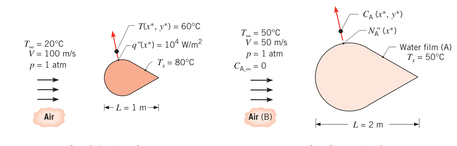
假设（Assumptions）：1. 稳态、二维不可压边界层行为，常物性；2. 边界层近似成立；3. 黏性耗散可忽略；4. 浓度边界层内水蒸气摩尔分数远小于 1。
物性（Properties）：表 A.4，空气（50°C）：\(\nu = 18.2 \times 10^{-6}\ \mathrm{m^2/s}\)、\(k = 28 \times 10^{-3}\ \mathrm{W/(m \cdot K)}\)、\(Pr = 0.70\)。表 A.6，饱和水蒸气（50°C）：\(\rho_{A,sat} = v_g^{-1} = 0.082\ \mathrm{kg/m^3}\)。表 A.8，水蒸气–空气（50°C）：\(D_{AB} = 0.26 \times 10^{-4}\ \mathrm{m^2/s}\)。
分析（Analysis）：要求的浓度与通量靠热-质类比确定。由式 (6.47)、(6.51)：
Case 1：
Case 2：
\(Re_{L,1} = Re_{L,2}\)、\(Pr = Sc\)、\(x_1^* = x_2^*\)、\(y_1^* = y_2^*\)、几何相同——所以温度与浓度分布同形，无量纲值相等：
代入 \(C_{A,\infty} = 0\)（干燥空气）：
其中表面浓度由饱和态给出：
所以
摩尔通量由式 (6.8) 求，\(h_m\) 由类比计算。由式 (6.49)、(6.53)：\(Pr = Sc\)、\(Re_{L,1} = Re_{L,2}\)、\(x_1^* = x_2^*\) 时两函数形式等价，故
其中 \(h = q''/(T_s - T_\infty) = 10^4\ \mathrm{W/m^2}/(80 - 20)^\circ\mathrm{C}\)（牛顿冷却公式），于是
点评（Comments）：
- 浓度边界层内水蒸气摩尔分数很小，所以 \(Re_{L,2}\) 直接用空气（组分 B）的运动黏度计算。
- Case 1 的空气物性按膜温度 \(T_f = (T_s + T_\infty)/2 = (80 + 20)/2 = 50^\circ\mathrm{C}\) 取。
6.7.2 蒸发冷却#
热-质类比的一个重要应用是蒸发冷却（evaporative cooling）：气体流过液面（图 6.10），液体表面发生蒸发，相变吸走汽化潜热。机理：贴近表面的液体分子在碰撞中获得足够能量、挣脱表面束缚而蒸发；维持蒸发所需能量只能来自液体内能——液体降温（冷却效应）。若要维持稳态，蒸发带走的潜热必须由周围环境的能量传入补足：忽略辐射，可以是气体显热对流传入，也可以是其他方式加热（如浸入液体的电加热器）。对包围液体的控制表面应用能量守恒（式 1.12c），单位表面积上：
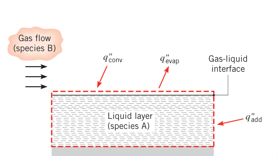
其中蒸发热流可近似为蒸发质量通量与汽化潜热的乘积：
没有其他加热方式时，式 (6.61) 就是"气体对流供热 = 蒸发耗热"的平衡。代入式 (6.4)、(6.18)、(6.62)：
表面蒸气密度取 \(T_s\) 下的饱和值。冷却效应的量级为
把 \(h_m/h\)（式 6.60）与理想气体密度代入，冷却效应也可写成
（式 6.60 的 \(Pr\)、\(Sc\) 指数取 \(n = 1/3\)，故 \(Le^{1-n} = Le^{2/3}\)。）求精度时，气体（组分 B）物性 \(\rho\)、\(c_p\)、\(Le\) 按热边界层算术平均（膜）温度 \(T_f = (T_s + T_\infty)/2\) 取；组分 A 的汽化潜热 \(h_{fg}\) 按表面温度 \(T_s\) 取。
大量环境与工业应用都是"气体 = 空气、液体 = 水"的组合：湿球温度计、冷却塔、汗液降温、湿布包裹的水罐……
【例 6.8】湿布包裹容器的饮料温度
已知（Known）：容器外包一层不断浸润高挥发性液体的织物，可用于炎热干燥地区给饮料降温。设容器置于 40°C 干燥环境空气中，浸润剂与空气之间的热、质传递按强制对流发生。浸润剂分子量 200 kg/kmol，汽化潜热 100 kJ/kg，该条件下饱和蒸气压约 \(5000\ \mathrm{N/m^2}\)，蒸气在空气中的扩散系数 \(0.2 \times 10^{-4}\ \mathrm{m^2/s}\)。
求（Find）：饮料的稳态温度。
示意图（Schematic）：
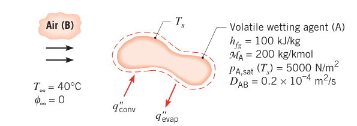
假设（Assumptions）：1. 热-质类比适用；2. 蒸气服从理想气体；3. 辐射可忽略；4. 空气物性按平均边界层温度 \(T_f = 300\) K 取。
物性（Properties）：表 A.4，空气（300 K）：\(\rho = 1.16\ \mathrm{kg/m^3}\)、\(c_p = 1.007\ \mathrm{kJ/(kg \cdot K)}\)、\(\alpha = 22.5 \times 10^{-6}\ \mathrm{m^2/s}\)。
分析（Analysis）：蒸发冷却效应由式 (6.65) 给出。令 \(p_{A,\infty} = 0\)（干燥空气）并整理：
其中系数
代数：
（\(Le = \alpha/D_{AB} = 22.5/20\)；分子里乘 \(10^{-3}\) 把 N·m 换成 kJ。）
解二次方程：
负根按物理理由舍弃（不蒸发时必有 \(T_s = T_\infty\)，此时 \(p_{A,sat} = 0\)、\(B = 0\)，只应剩 \(T_s = T_\infty\) 这一个解）：
点评（Comments）：只要热-质类比可用，结果与容器形状无关。40°C 的沙漠里"煮"出一杯 6°C 的饮料，代价只是 continual 供湿的织物——蒸发冷却的威力。
6.7.3 雷诺类比#
第二个边界层类比来自表 6.1 的另一个观察：当 \(dp^*/dx^* = 0\) 且 \(Pr = Sc = 1\) 时，三个边界层方程 (6.35)–(6.37) 精确同形。对平行来流的平板，\(dp^*/dx^* = 0\)、边界层外自由流速度不变（\(u_\infty = V\)），壁面与自由流边界条件（表 6.1）也同形。于是 \(u^*\)、\(T^*\)、\(C_A^*\) 的解（式 6.44、6.47、6.51）必等价；由式 (6.45)、(6.48)、(6.52)：
把 \(Nu\)、\(Sh\) 换成斯坦顿数（Stanton number）\(St\) 与传质斯坦顿数 \(St_m\)：
式 (6.66) 化为
这就是雷诺类比（Reynolds analogy）：它把速度、热、浓度三种边界层的关键工程参数串在一条链上——已知一个，其余全可推出。但使用有条件：除边界层近似外，式 (6.69) 的精度要求 \(Pr\)、\(Sc \approx 1\) 且 \(dp^*/dx^* \approx 0\)。好在已经证明：加入适当修正后，类比可推广到宽范围的 \(Pr\)、\(Sc\)——修正雷诺类比（modified Reynolds analogy），又称奇尔顿–科尔布类比（Chilton–Colburn analogy）：
\(j_H\)、\(j_m\) 分别是热量与质量传递的科尔伯恩 \(j\) 因子（Colburn j factors）。层流中式 (6.70)、(6.71) 只适用于 \(dp^*/dx^* \approx 0\) 的情形；湍流中流动对压强梯度不那么敏感，两式近似成立。若类比在表面上每一点都成立，也可用于表面平均系数。
拓展：j 因子在后面章节怎么用
\(j_H = St\,Pr^{2/3}\) 把"摩擦"与"换热"锁在一起：湍流平板上 \(j_H \approx C_f/2\)，意味着测了（或算了）摩擦就能估换热，反之亦然。第 7 章的湍流平板关联式、第 8 章管内流动的 Colburn 型关联式都直接以 \(j_H\)（或 \(St\,Pr^{2/3}\)）为骨架。另一个记忆锚点：雷诺类比 (6.69) 是 \(Pr = 1\) 的特例，式 (6.70) 是它对任意 \(Pr\) 的"折射率修正"——指数 \(2/3\) 来自大量实验的折中。
6.8 小结#
本章处理了对流传递的若干基本问题。但别丢了对流问题本身：首要目标仍是找到确定对流系数 \(h\) 与 \(h_m\) 的手段。虽然解边界层方程原则上能得到它们，但只有简单流动才容易解出；更实用的路线是按式 (6.49)、(6.53) 的形式，把实测的换热/传质结果整理成无量纲数组的经验关联式（correlations）——这正是后续各章的主线。
求解对流问题的三条路径：
- 解析解：对简单几何（如平板平行流层流）解边界层方程——Blasius 速度解、波尔豪森温度解（第 7.2 节、附录 G）；
- 数值解：有限差分/有限元求解边界层乃至完整 N-S 方程（原书引 Patankar）；
- 经验关联式：实验测量 + 无量纲整理成 \(Nu = f(Re_L, Pr)\)、\(Sh = f(Re_L, Sc)\)，工程主流（第 7 章外流、第 8 章内流、第 9 章自由对流、第 10 章相变对流、第 11 章换热器）。
三条路径的通行证就是本章的相似参数与无量纲数组——它们把"每种流体、每种速度、每种尺寸各做一次实验"的不可能任务，压缩成"每个几何形状一条 \(Nu = f(Re, Pr)\) 曲线"。
原书章末自测问题（6.8 节复习用）
- 局部对流换热系数与平均系数的区别是什么？单位各是什么？传质的局部/平均系数呢？
- 对热流密度与换热量的牛顿冷却公式各是什么形式？传质的摩尔与质量形式呢？
- 举几个需要对流传质的例子。
- 菲克定律是什么？
- 速度、热、浓度边界层各是什么？在什么条件下发展？
- 速度边界层内什么量随位置变化？热边界层呢？浓度边界层呢？
- 对流换热强依赖表面上的流动，为什么还能在表面处用傅里叶（菲克）定律求热（组分）通量？
- 从层流转到湍流边界层，换热与传质怎么变？
- 对流传递方程组体现了哪些自然定律？
- \(x\)-动量方程 (6.28)、能量方程 (6.29)、组分守恒方程 (6.30) 各项代表什么物理过程？
- 薄速度、热、浓度边界层内可以做哪些特殊近似？
- 膜温度是什么、怎么用？
- 雷诺数怎么定义？物理诠释是什么？临界雷诺数起什么作用？
- 普朗特数怎么定义？它如何影响平板层流中速度与热边界层的相对生长？液态金属、气体、水、油的室温 \(Pr\) 量级各是多少？
- 施密特数、路易斯数怎么定义？物理诠释是什么？如何影响三种边界层的相对发展？
- 摩擦系数、努塞尔数、舍伍德数各是什么？给定几何后它们的局部/平均值由哪些独立参数决定？
- 速度、热、浓度边界层在什么条件下可称为"类比"？类比行为的物理基础是什么？
- 热-质类比联系了哪两个重要边界层参数？
- 蒸发冷却效应的物理基础是什么？你体验过吗？
- 雷诺类比联系了哪三个重要边界层参数？
- 湍流与层流的物理区别是什么？
原书笔误：空气摩尔质量 28.7
6.4.2 节算例中空气摩尔质量印作 28.7 kg/kmol，应为 28.97 kg/kmol（否则 \(8315/28.7 \approx 290\)，与书给的 \(R = 287\ \mathrm{J/(kg \cdot K)}\) 对不上）。
坑与陷阱#
8 个容易踩的坑
- 局部系数与平均系数别混用：\(q'' = h(T_s - T_\infty)\) 里的 \(h\) 是局部值（式 6.4）；\(q = \bar h A_s (T_s - T_\infty)\) 里的 \(\bar h\) 是平均值（式 6.12）。幂律 \(h_x = C x^n\) 时 \(\bar h_x \neq h_x\)——例 6.1 的 \(x^{-0.1}\) 差出 11%，\(x^{-0.5}\)（层流平板）会差出一倍。
- 转捩位置不是固定的：\(Re_{x,c} = 5 \times 10^5\) 只是代表值，实际 \(10^5\)–\(3 \times 10^6\) 随粗糙度与来流湍流度变；例 6.4 里水温从 300 K 升到 350 K，\(x_c\) 从 0.43 m 挪到 0.19 m，\(\bar h\) 直接翻倍。凡物性随温度变，先重算 \(x_c\)。
- 分段平均系数要分段积分：层流段用 \(h_{lam}\) 积到 \(x_c\)、湍流段从 \(x_c\) 积到 \(L\)（例 6.4 的式子），最常见错误是拿湍流关联式从头积到尾或漏掉 \(x_c^{0.5}\) 项。
- 努塞尔数配流体导热系数，毕渥数配固体导热系数：\(Nu = hL/k_f\)，\(Bi = hL/k_s\)（表 6.2）。两者形式像、角色完全不同——Nu 是边界层的无量纲换热强度，Bi 是固体内外热阻之比（第 5 章）。
- 雷诺类比有适用域：\(C_f/2 = St = St_m\)（式 6.69）要求 \(Pr \approx Sc \approx 1\) 且 \(dp^*/dx^* \approx 0\)。\(Pr\) 偏离 1 用修正形式 \(C_f/2 = St\,Pr^{2/3} = j_H\)（式 6.70）；层流还叠加"无压强梯度"限制，湍流才对压强梯度近似不敏感。顺手拿来就用，先查条件。
- 气体物性的压强修正只动 \(\nu\)（密度）：\(k\)、\(Pr\)、\(\mu\)、\(c_p\) 基本不随压强变，\(\nu = \mu/\rho \propto 1/p\)。例 6.6 的氢气从 1 atm 到 2 atm，\(\nu\) 减半、\(Pr\) 不变——漏掉这一步，风洞风速与 \(h_{H_2}\) 全错。
- 物性一律按膜温度取：\(T_f = (T_s + T_\infty)/2\)；蒸发冷却里 \(h_{fg}\) 例外地按表面温度 \(T_s\) 取（式 6.65 后的说明）。例 6.5、6.6、6.7 的点评反复强调。
- 表面蒸气浓度是饱和值，不是来流值：\(C_{A,s} = p_{sat}(T_s)/(\mathcal{R} T_s)\)（式 6.22），由界面热力学平衡决定；来流可以是干的（\(C_{A,\infty} = 0\)，例 6.7、6.8）。把 \(C_{A,\infty}\) 当表面条件用，通量直接算错。
速览#
- 对流问题 = 求对流系数：局部 \(h\)、\(h_m\) 与平均 \(\bar h\)、\(\bar h_m\)；其余一切（热流、传质速率）都由速率方程（式 6.4、6.8、6.12、6.15）自动得出。
- 三种边界层：速度（\(\delta\)，\(u/u_\infty = 0.99\)）、热（\(\delta_t\)，\((T_s - T)/(T_s - T_\infty) = 0.99\)）、浓度（\(\delta_c\)，同构 0.99 定义）；表面处流体静止，热流与组分通量分别按傅里叶定律与菲克定律计算，由此得 \(h\)（式 6.5）与 \(h_m\)（式 6.9）。
- 平均与局部：\(\bar h = (1/A_s)\int h\, dA_s\)，平板 \(\bar h = (1/L)\int_0^L h\, dx\)（式 6.13、6.14）；\(\bar h_m\) 同构（式 6.16、6.17）。
- 层流/湍流：转捩由 \(Re_x = \rho u_\infty x/\mu\)（式 6.23）判，平板临界值 \(Re_{x,c} = 5 \times 10^5\)（式 6.24，范围 \(10^5\)–\(3 \times 10^6\)）；湍流边界层分黏性底层、缓冲层、湍流区，湍流壁面梯度大 → \(\tau_s\)、\(h\) 大。
- 边界层近似（式 6.25、6.26）+ 四大守恒（连续 6.27、动量 6.28、能量 6.29、组分 6.30）：速度场与温度/浓度场解耦但单向耦合，\(h\) 强依赖速度场。
- 无量纲化产出相似参数：\(Re_L = VL/\nu\)、\(Pr = \nu/\alpha\)、\(Sc = \nu/D_{AB}\)；产出无量纲量 \(C_f\)（式 6.45）、\(Nu = hL/k_f\)（式 6.48）、\(Sh = h_m L/D_{AB}\)（式 6.52）。
- 函数形式（给定几何）：\(C_f = f(x^*, Re_L)\)、\(Nu = f(x^*, Re_L, Pr)\)、\(\overline{Nu} = f(Re_L, Pr)\)、\(Sh\) 同构——七个有量纲参数压成两三个无量纲数组。
- 边界层厚度比：\(\delta/\delta_t \approx Pr^n\)、\(\delta/\delta_c \approx Sc^n\)、\(\delta_t/\delta_c \approx Le^n\)，\(n \approx 1/3\)；气体三者相当，液态金属 \(\delta_t\) 最厚，油类最薄。
- 热-质类比：\(Nu/Pr^n = Sh/Sc^n\)（式 6.59），\(h/h_m = \rho c_p Le^{2/3}\)（式 6.60，\(n = 1/3\)）；蒸发冷却 \((T_\infty - T_s) = (\mathcal{M}_A h_{fg}/\rho c_p Le^{2/3})[p_{A,sat}(T_s)/(\mathcal{R} T_s) - p_{A,\infty}/(\mathcal{R} T_\infty)]\)（式 6.65）。
- 雷诺类比：\(C_f/2 = St = St_m\)（式 6.69，要求 \(Pr \approx Sc \approx 1\)、无压强梯度）；修正形式（Chilton–Colburn）\(C_f/2 = St\,Pr^{2/3} = j_H\)（\(0.6 < Pr < 60\)）、\(C_f/2 = St_m\,Sc^{2/3} = j_m\)（\(0.6 < Sc < 3000\)），湍流近似成立。
术语速查#
| 英文 | 中文 | 一句话 |
|---|---|---|
| velocity boundary layer | 速度边界层（流动边界层） | 速度从壁面零值过渡到 0.99 倍自由流值的薄层，厚度 \(\delta\) |
| thermal boundary layer | 热边界层 | 温度从壁面 \(T_s\) 过渡到 \(T_\infty\) 的薄层，厚度 \(\delta_t\) |
| concentration boundary layer | 浓度边界层（传质边界层） | 浓度从壁面 \(C_{A,s}\) 过渡到 \(C_{A,\infty}\) 的薄层，厚度 \(\delta_c\) |
| friction coefficient | 摩擦系数 | 无量纲表面切应力 \(C_f = \tau_s/(\rho u_\infty^2/2)\)（式 6.1） |
| Fick's law | 菲克定律 | 扩散摩尔通量正比于浓度梯度（式 6.6），傅里叶定律的传质版 |
| binary diffusion coefficient | 二元扩散系数 | 组分 A 在 B 中扩散的物性 \(D_{AB}\)，m²/s |
| convection mass transfer coefficient | 对流传质系数 | \(h_m\)（m/s），牛顿冷却公式的传质版（式 6.8） |
| local / average convection coefficient | 局部 / 平均对流系数 | \(h(x)\) 沿程变化；\(\bar h\) 为面积或长度平均（式 6.13、6.14） |
| critical Reynolds number | 临界雷诺数 | 层流/湍流转捩位置的判据 \(Re_{x,c}\)，平板取 \(5 \times 10^5\) |
| viscous sublayer | 黏性底层 | 湍流边界层最内层，扩散主导、速度分布近线性；其外依次为缓冲层与湍流区 |
| Reynolds number | 雷诺数 | 惯性力与黏性力之比 \(Re_L = VL/\nu\)（式 6.41） |
| Prandtl number | 普朗特数 | 动量扩散率与热扩散率之比 \(Pr = \nu/\alpha\)（式 6.42），流体物性 |
| Schmidt number | 施密特数 | 动量扩散率与质量扩散率之比 \(Sc = \nu/D_{AB}\)（式 6.43），流体物性 |
| Nusselt number | 努塞尔数 | 壁面无量纲温度梯度 \(Nu = hL/k_f\)（式 6.48），对流与纯导热之比 |
| Sherwood number | 舍伍德数 | 壁面无量纲浓度梯度 \(Sh = h_m L/D_{AB}\)（式 6.52） |
| Lewis number | 路易斯数 | 热扩散率与质量扩散率之比 \(Le = \alpha/D_{AB} = Sc/Pr\)（式 6.57） |
| Stanton number | 斯坦顿数 | 修正努塞尔数 \(St = h/(\rho V c_p) = Nu/(Re\,Pr)\)（式 6.67） |
| Colburn j factor | 科尔伯恩 j 因子 | \(j_H = St\,Pr^{2/3}\)、\(j_m = St_m\,Sc^{2/3}\)（式 6.70、6.71） |
| boundary layer approximations | 边界层近似 | 法向梯度远大于流向梯度、压强取自由流值（式 6.25、6.26） |
| film temperature | 膜温度 | 物性取值温度 \(T_f = (T_s + T_\infty)/2\) |
| Mach number | 马赫数 | 速度与声速之比 \(Ma = V/a\)，超过约 0.3 需计压缩性 |
| evaporative cooling | 蒸发冷却 | 蒸发潜热取自液体自身导致的降温效应（式 6.61–6.65） |
| Reynolds analogy | 雷诺类比 | \(C_f/2 = St = St_m\)（式 6.69），动量-热-质传递的参数链条 |
| Chilton–Colburn analogy | 奇尔顿–科尔布类比（修正雷诺类比） | 用 \(Pr^{2/3}\)、\(Sc^{2/3}\) 修正的雷诺类比（式 6.70、6.71） |
| Buckingham pi theorem | 白金汉π定理 | \(n\) 个物理量、\(k\) 个基本量纲可化为 \(n-k\) 个无量纲π项 |